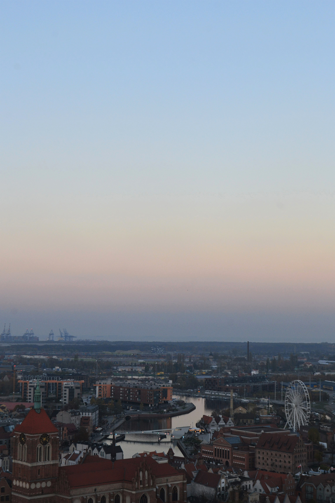
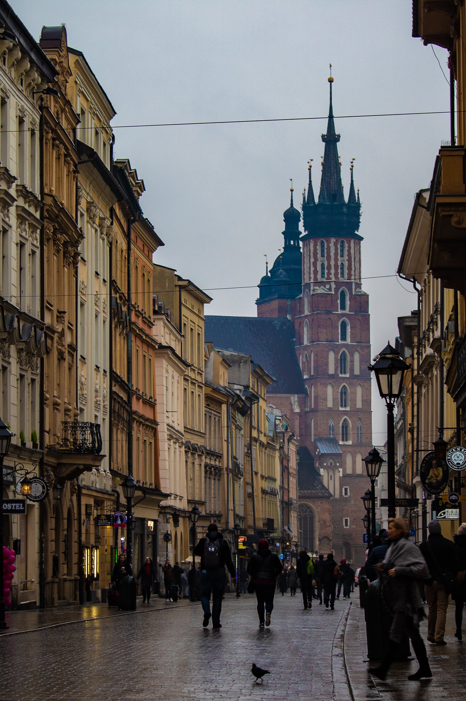
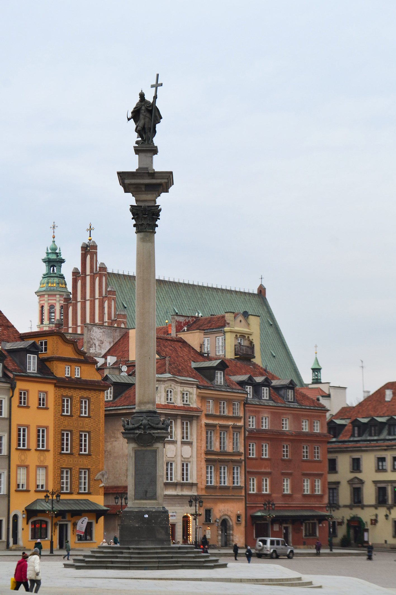

Apsolvent na Građevinsko-arhitektonskom fakultetu u Nišu, sa velikom željom i motivacijom za prekvalifikaciju u Software Developer-a.
Smatram da hobiji predstavljaju vrlo bitan deo našeg života, oni nam omogućavaju da se odvojimo od svoje svakodnevnice i više uživamo u trenutku.
Svoje slobodno vreme volim da provodim u
prirodi jer mi je to oduvek pružalo osećaj mira i
ispunjenosti, a ujedno i najveći izvor inspiracije.
Poslednji vrh koji sam osvojila bio je Trem, najviši vrh Suve planine, koji se nalazi na njenom zapadnom kraku.
Predeo oko vrha je kamenit, sastavljen od vrtača i uvala koje su na svom dnu travnate. Trem, jedan od najviših vrhova u Srbiji važi i za najatraktivniji vrh, najviše zbog toga što severni deo krečnjačke stene koja formira vrh ima vertikalni pad od 1.000 metara. Sa vrha se pruža pogled gotovo na celu jugoistočnu Srbiju, uključujući masiv Stare planine sa vrhom Midžor, kao i na Svrljiške planine i celo Zaplanje. Trem je i cilj najmasovnije planinarske republičke akcije pod nazivom uspon na Trem. Još jedna od masovnih planinarskih akcija koja se održava duži niz godina je i Noćni uspon na Trem. Administrativno masiv oko vrha, kao i sam vrh pripadaju opštini Niška banja.
| Dužina staze: | 15 km |
|---|---|
| Najniža tačka: | 850 m |
| Najviša tačka: | 1810 m |
| Visinska razlika uspona: | 997 m |
| Vreme trajanja uspona: | 6-7 sati |
Još jedan od hobija koje bih izdvojila jeste upoznavanje novih kultura, naroda i jezika kroz posećivanje različitih zemalja.
Kao svoje omiljeno iskustvo tog tipa izdvojila bih posetu Poljske, u kojoj sam provela pet meseci u okviru Erasmus+ razmene studenata.
| Gdanjsk | Krakov | Varšava |
|---|---|---|
|  |  |  |
Hladne i kišne dane volim da provodim kući, gledajući dobru seriju ili film, a kao svoje omiljenje izdvojila bih: